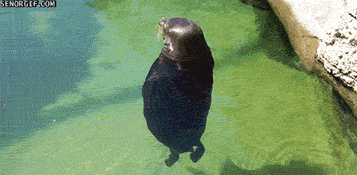

Seals are one of the funniest animals, does any other animal truly understand humor?
"Wow! That seal is so funny, there's no other reason for him to be doing that."
-someone
Random_User: I once lost a math competition and my opponent was a seal
Me: Really?
Random_User: yeah it was just a really smart seal
Seals are so smart we could probably teach them how to code, one day in the future the top of a document might look like this:
//Time Taken: 2hrs 45mins //@author Seal
What animal is most likely to create the next Google?
Source: Just Trust Me Bro
There are many kinds of seals, they come from 3 animal families
Unfortunately there is only one living type of walrus, which is the Odobenus, but the other seal families have lots of species
Otariidae
Phocidae
That's strange, there's so many kinds of seals... but what happened to all the walruses?
There's many running theories on the disappearance of all the walruses:
Seals are very cute but they make some weird sounds, let's hear some
A seal 'bark', almost a dog bark
assorted strange seal sounds, a wild seal would probably make these sounds if you tried to approach it